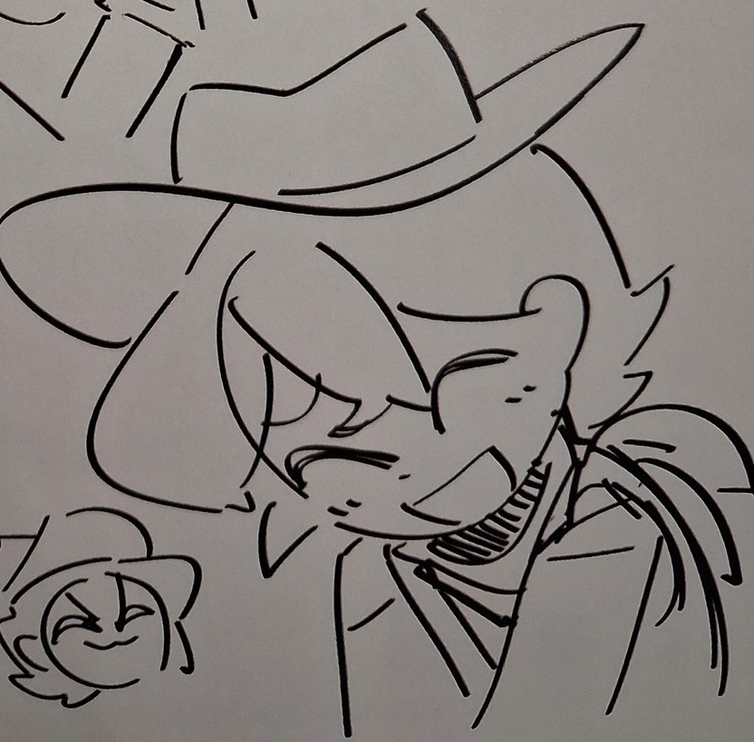

> hello, I'm 88shard88.

> I'm a (mostly) solo game developer and creator of various forms of art.
> I do a lot of character design and digital art/music, and coding.
] If you're visiting this page though, you likely know me for my work on FORGOTTEN.
I work on other things though, such as ITERATION2 (another game), and FOR GLORY,
where I do a lot of character and music design. If you want me to do a character
design or track for you, just ask. [
anyways, here's some music! this one's for a game over track (at least up until the fast parts start):